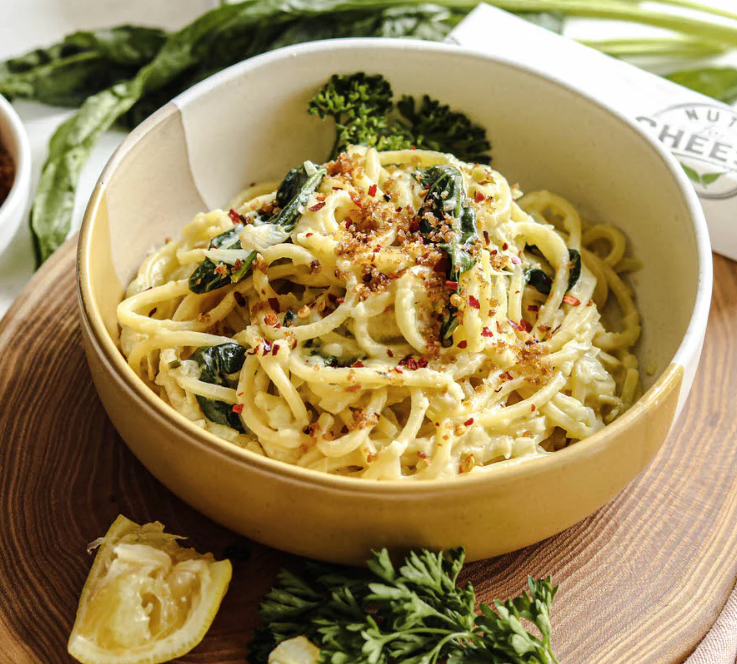

Lemon Butter Herb Pasta

Description
A quick, delicious, and light pasta sauce with a zesty flavor! You can easily add chicken, shrimp, or your favorite veggies to personalize this basic lemon-butter sauce. Serve with Parmesan cheese.
Ingredients
- 4 cups bow-tie pasta
- 1/4 cup butter
- 1/4 cup chicken broth
- 3 tablespoons lemon juice
- 1/4 teaspoon oregano
- 1/4 teaspoon dried basil
- 1/4 teaspoon minced garlic
- 1 pinch salt and ground black pepper to taste
Directions
- Gather all Ingredients
- Bring a large pot of lightly salted water to a boil. Cook pasta at a boil, stirring occasionally, until cooked through yet firm to the bite, about 12 minutes; drain.
- Melt butter in a saucepan over medium heat. Stir chicken broth, lemon juice, oregano, basil, and garlic into butter. Bring to a simmer and reduce heat to medium-low; cook until thickened to your desired texture, 5 to 7 minutes.
- Season sauce with salt and pepper. Stir cooked pasta into butter sauce to coat.
Go back to Luc's Recipes